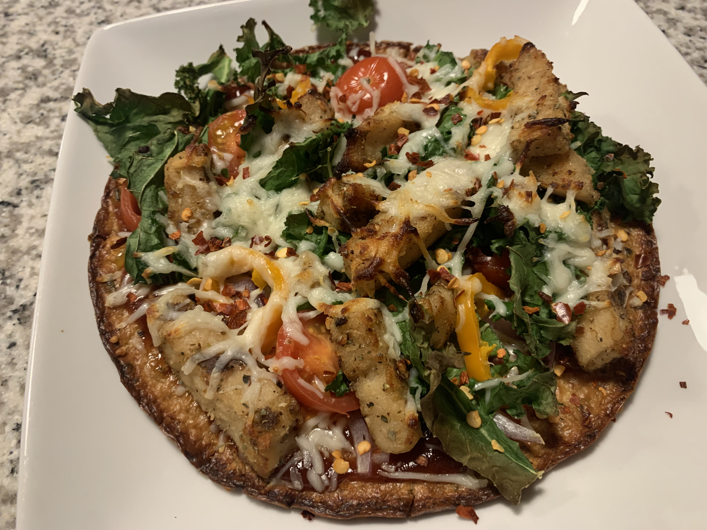

BBQ Pizza

Description
Dinner for 2 or Snack for 4
Simple "Homemade" pizza for you and your loved ones
Ingredients
- Cauliflower Pizza Crust
- Plant-based Chicken of Your Choice
- 1/2 Cup Mozzarella Cheese
- 1/2 Cup Baby Tomatoes
- 1 Cup Arugula
- 1Tbsp BBQ Sauce of Your Choice
- (optional) Red Pepper Flakes
Steps
- Depending on which pizza crust you buy, it may be necessary to 'pre-cook' the crust before loading toppings, follow instructions provided by producer
- Spread BBQ sauce evenly across pizza crust
- Sprinkle 1/4 cup of the mozzarella cheese onto the pizza
- Add arugula to the pizza
- Halve or quarter the baby tomatoes and add to pizza
- Sprinkle 1/8 cup of the mozzarella cheese onto the pizza
- Cook the plant-based chicken in a skillet as directed by its packaging (we like to add some BBQ sauce in this step to add flavor)
- Put the chicken onto your pizza and sprinkle the rest of your cheese on top
- Put the pizza in the oven for about 20-25 minutes at the temperature recommended by the people that made your crust
- Enjoy!